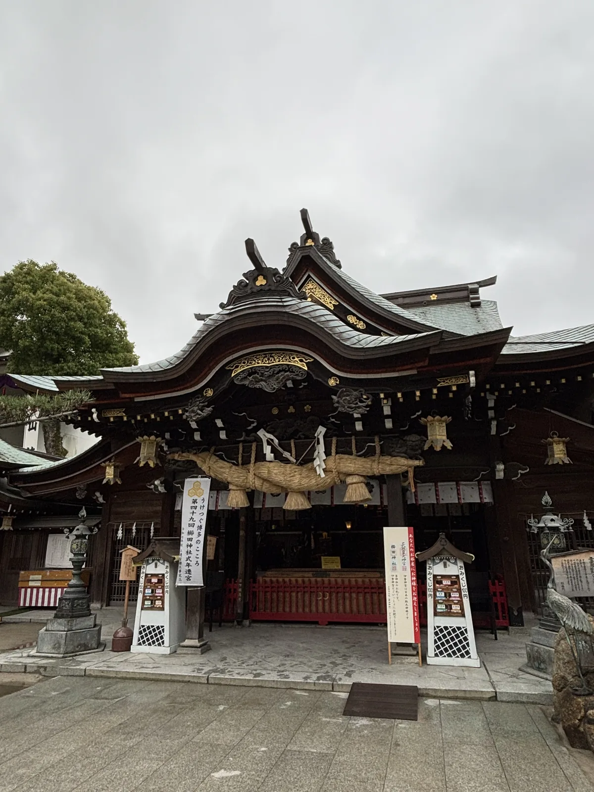
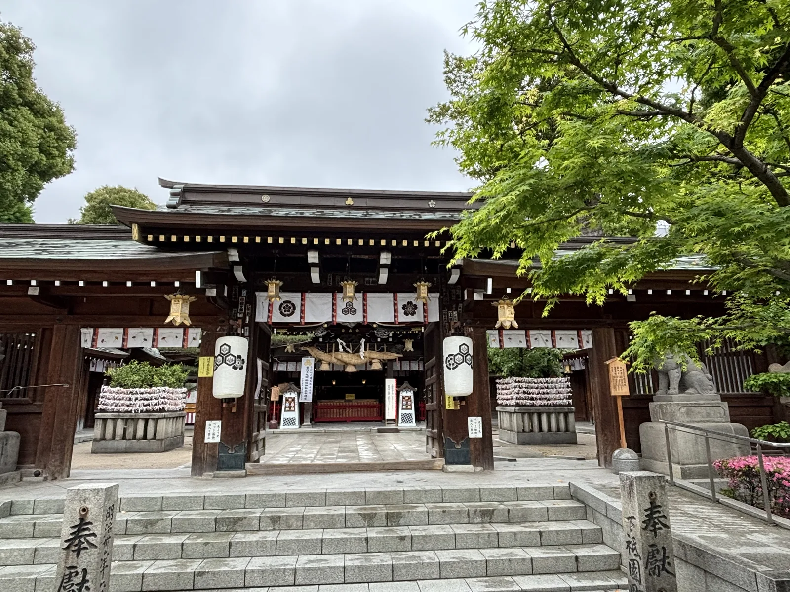
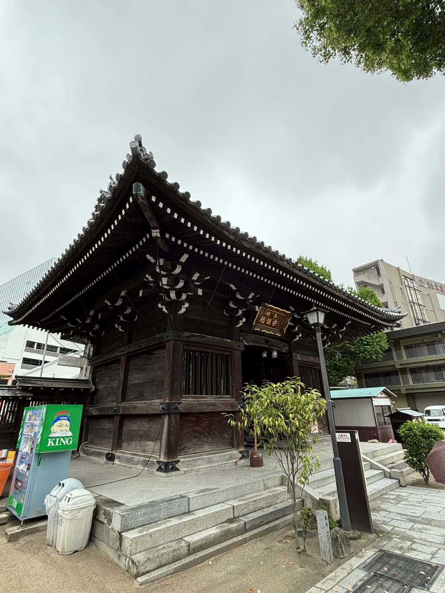
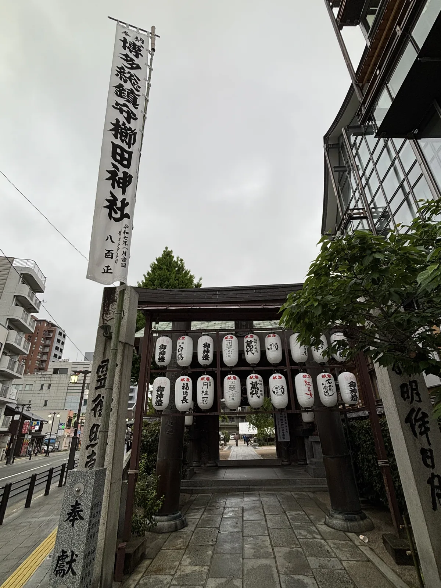
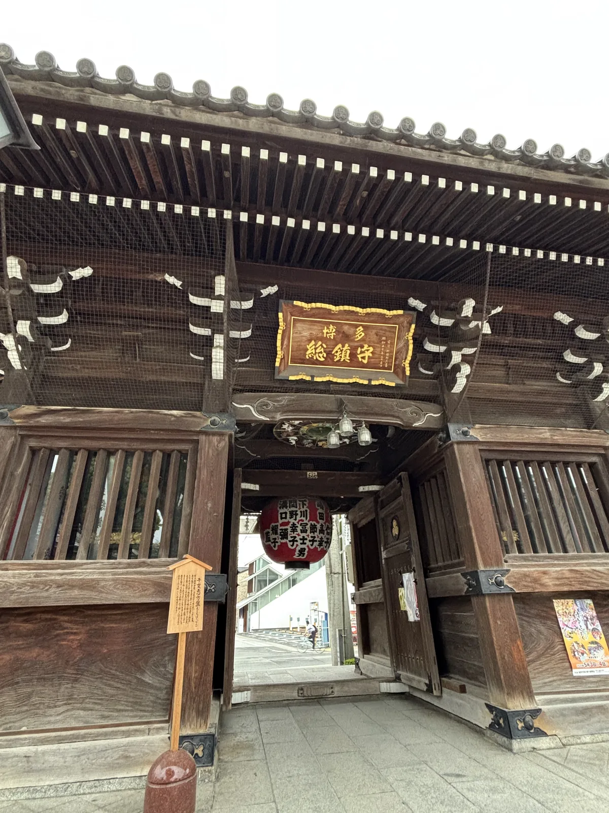
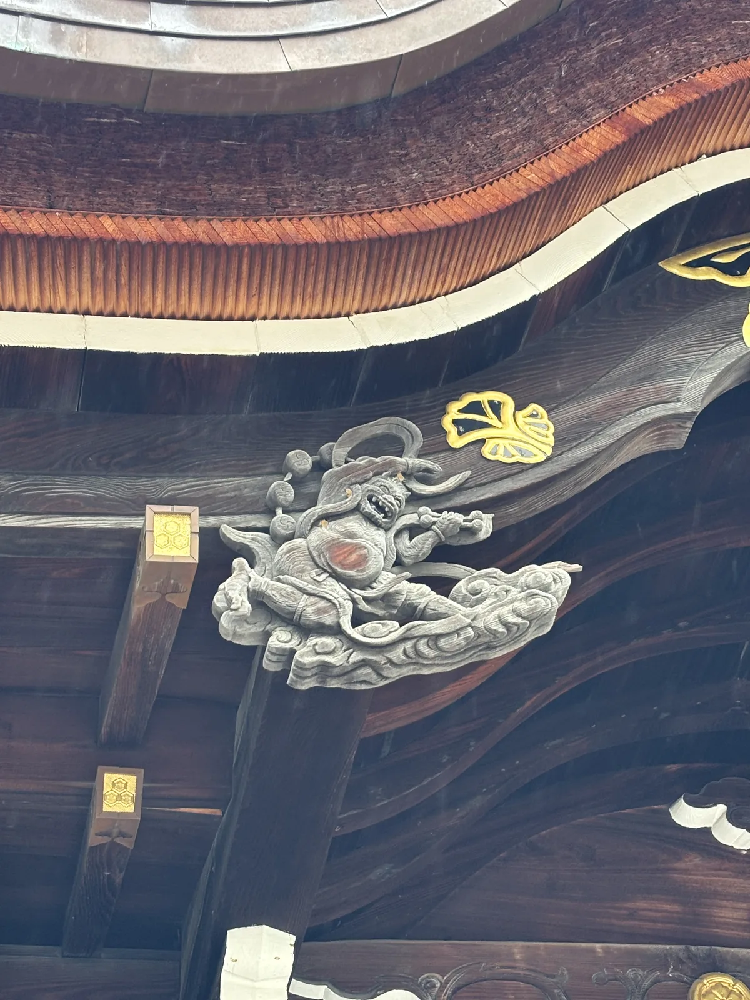
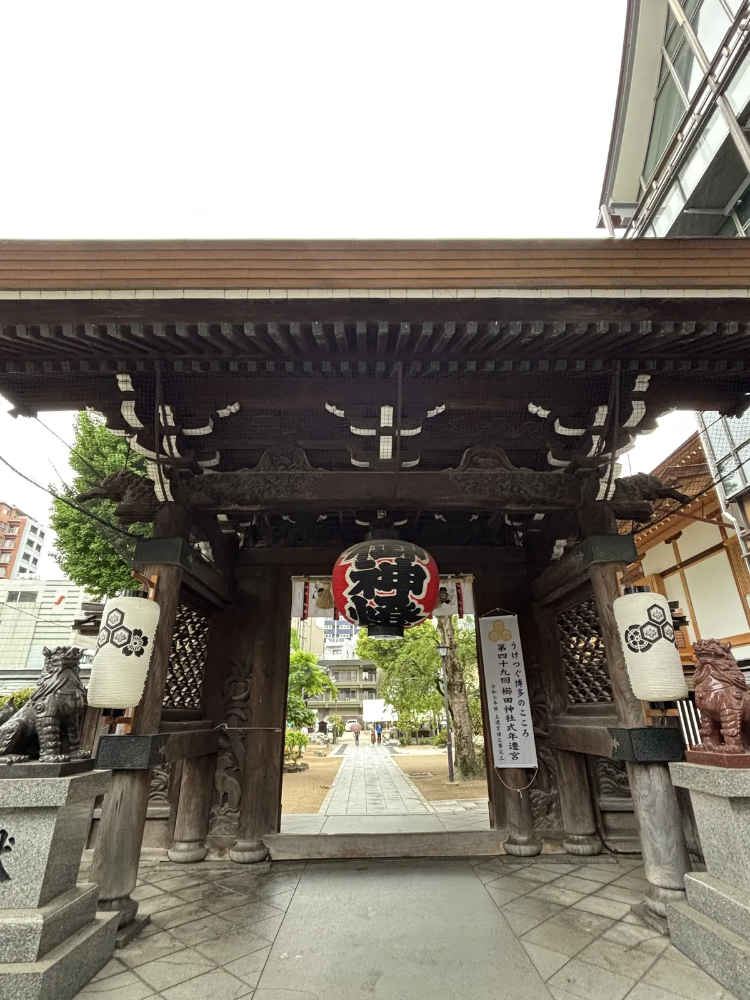
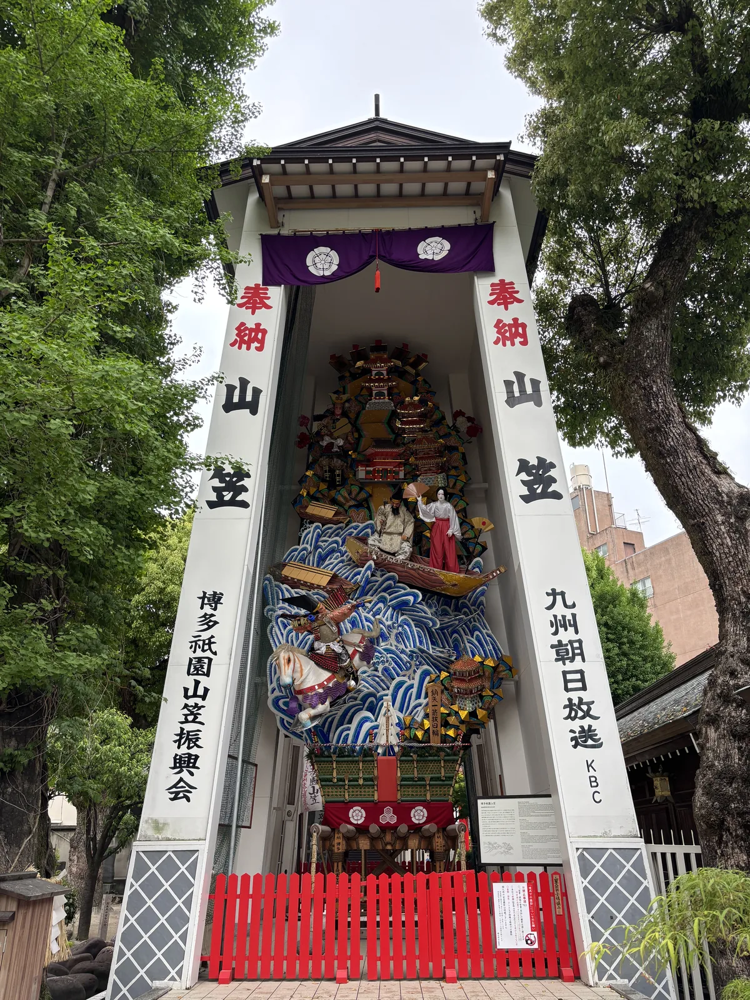
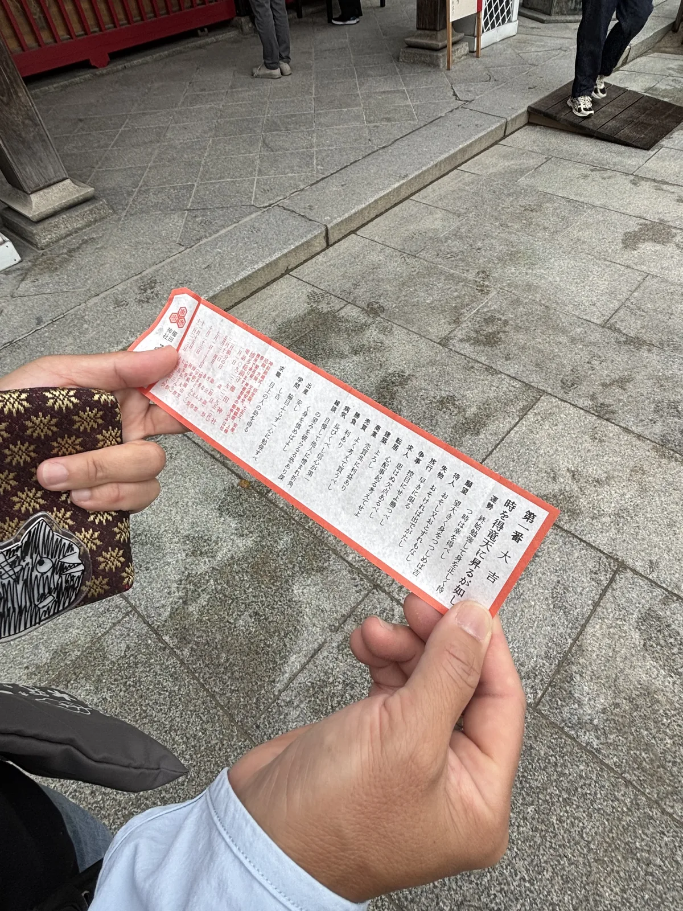
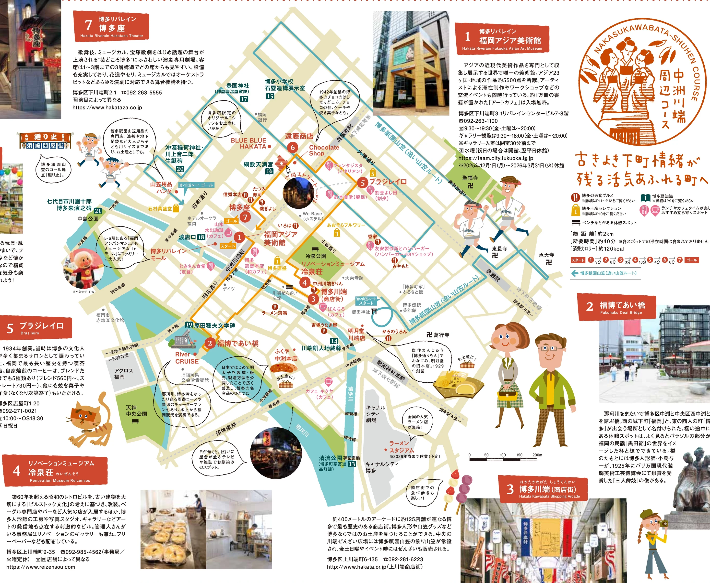

⛩ 神社寺廟散策 · 福岡縣・福岡市博多區上川端町 · 2025-04
櫛田神社（博多）
櫛田神社くしだじんじゃ
- 祭神
- 大幡主大神（正殿）・天照皇大神（左殿）・須佐之男大神（右殿）
- 社格
- 博多總鎮守
七點四十五分走到門口時，這座神社已經開了將近四個小時。境內四點開門， 御守與御朱印卻要等到九點，所以那個時段站在裡面的多半是上班前繞過來一趟的人。 門外就是上川端的街——柏油、公車、便利商店——中間沒有任何緩衝的參道。
這裡是博多祇園山笠的起點。每年七月十五日凌晨四點五十九分， 七個「流」的舁き山笠（かきやまかさ，扛在肩上跑的山笠）從這座境內衝出去， 在市區跑完約五公里、約三十分鐘。其餘的三百六十四天，那條路是可以用走的。

三宮並祀之認定
一座拜殿，後面是三個宮。正殿櫛田宮祀大幡主大神，左殿大神宮祀天照皇大神， 右殿祇園宮祀須佐之男大神。參拜的人站在同一個位置一次面對三位神明， 而這三位不是主從或配祀的關係，是三組各自獨立的信仰被收進同一個境內。
它們進來的時間差得很遠。社傳說天平寶字元年（757）大幡主大神因託宣鎮座； 須佐之男大神則是天慶四年（941），小野好古為了討伐藤原純友之亂的戰勝報謝而勸請； 至於天照皇大神是什麼時候奉祀的，官方文字寫的是年代不明。
大幡主大神從哪裡分靈而來，說法不一。一說是伊勢松阪的櫛田神社， 一說是平家所領、肥前國神埼莊的櫛田神社；福岡市的文化財資料舉出後者， 但同一段文字接著寫「史料上並未獲得佐證」——這件事到今天還懸著。
三個宮各自帶著一個祭典。櫛田宮的是二月的節分大祭，祇園宮的是七月的博多祇園山笠， 大神宮的是十月的博多おくんち。一年裡最大的三個日子分屬三位神明， 祭典的日程表其實就是這座神社的結構圖，而不是它的活動預告。

這種三合一的結構會跟著山笠出門。奇數號的舁き山笠稱「差し山」， 頂上掛著三面神額，寫的正是「大神宮」「櫛田宮」「祇園宮」；偶數號的「堂山」則在頂上放一座堂的作物。 《櫛田社鑑》把這個分法上溯到寶永五年（1708）的公命，神明的名字每年一次被扛在肩上，繞行整個博多部。
立地非屬偶然
博多遺跡群坐落在三列東西向的沙丘上。奈良時代的博多北面是海、西面是入江、南面有川， 是一塊被水圍起來的獨立區域；最北的那一列沙丘， 就是鎌倉後期文獻裡的「息浜」，也是後來港灣機能移過去的地方。
櫛田神社站在中間那列沙丘上。福岡市博物館的調查指出， 以今天的祇園町交叉口為中心的沙丘中央部，有一塊約一百公尺見方的奈良時代區劃， 推定是一町見方的官衙域——神社所在的位置，是這座城市最早被劃出格線的一角。
年代也對得上。「博多」這個地名初次出現在《續日本紀》，是天平寶字三年（759）的「博多大津」， 而神社的創建傳承寫的是天平寶字元年（757），兩者相差兩年。 誰先誰後不可考，但可以確定的是這兩件事發生在同一個十年裡。

海曾經很近。龍宮寺的舊地被記為「袖の湊的海邊」，妙樂寺的草創地在「博多灣岸的沖の浜」； 境內那棵縣指定的銀杏樹下，另外躺著一塊蒙古碇石——砂岩、全長二百五十二公分、 推定三百五十公斤，是古代大型船隻的石錨。
碇石的出土地不明，如今與另一塊御供所町出土的碇石並排放在樹下。 同類石錨一般全長兩到三公尺，而被改作供養塔的例子上刻著正安四年（1302）與延文三年（1358）的年號， 可知十四世紀已經被轉用；它可能來自蒙古襲來時的元軍船，也可能來自宋商船，兩種說法目前都還站得住。

沙丘還給了這裡一樣東西。本殿地下有湧泉，取名靈泉鶴之井戶， 是境內少數與地形直接相關的設施；上面那張拜殿照片的右下角，那隻銅鶴就是它的標記。 一塊被海與川圍住的高地、一條擋住水的沙脊、一口打在沙脊上的井——順序是這樣排下來的，先有地形才有神社。
參道形制及其空間效果
沒有參道。三個入口——樓門、北神門、南神門——全部直接開在街上， 從人行道跨進去，兩三步就站在境內；連地下鐵的車站都叫櫛田神社前，出口到門口約一分鐘。 這座神社不靠距離做鋪陳，它把市街與境內之間的過渡壓縮成一道門的厚度。
門本身因此被加重了。樓門的簷下懸著金字扁額「博多総鎮守」， 另有一面額寫「威稜」，讀作「いつ」，指的是天子的威光。 兩塊字講的都不是神明，而是這座神社相對於這座城市、相對於國家的位置。

樓門的天井上嵌著一面圓盤，叫「干支恵方盤」，畫著十二支，中央一支箭。 每年大晦日，箭會被轉到新一年的惠方去。進門的人不必抬頭也不會少什麼， 但那面盤每年轉一次，一整年的方向就這樣被記在門的天井上。
中神門是最後一道。門楣掛白幕、左右各一盞大提燈，門洞的框正好套住拜殿， 兩側的木架上掛滿了綁起來的御籤，白得像一層薄雪。從街上進門到看見拜殿總共不到二十步， 所有的空間效果都必須在這幾步之內完成，沒有鋪陳，也沒有第二次機會。

拜殿破風的左右掛著風神與雷神的木雕，境內的木札這樣解釋它們： 「頭上、拝殿破風の左右に掲げられている風神雷神の木彫は数多い当社木彫類の中で、 ユーモアあふれるカラッとした博多っ子の気質を表わしていると言われています」。
木札把兩尊神的表情讀成了博多人的性格。博多區的官方介紹說得更具體： 那是風神扮鬼臉、從雷神手裡逃走的一幕。神社建築上的裝飾一般被用來鎮邪， 這裡卻被用來說明住在附近的人是什麼樣子，這種讀法本身就很博多。
節分的時候，三個門會各裝上一張高約五公尺的大お多福面，從一九六一年開始。 參拜的人從那張臉的嘴裡走進境內。門在這一天不再是門，是一張放大的臉； 而三個入口就這樣被統一成同一個表情，市街與境內的界線也再一次被壓在門上。
第四十九回式年遷宮
我去的那天，境內到處立著同一種白幟：「うけつぐ博多のこころ／第四十九回櫛田神社式年遷宮」。 式年遷宮二十五年一次，第四十九回定在令和七年（2025）秋天， 配合十月的博多おくんち舉行上遷宮大祭——我到的時候，離那一天還有半年。
奉賛會的趣意書由宮司阿部憲之介署名，會長是松尾新吾，文件日期為令和二年。 從立案到執行的這五年裡，白幟一直插在境內，也插在川端的商店街上。 二十五年一次的工程，需要的準備時間比一個人記得住的還長。

「博多的心」要接下去的東西，有具體的組織形式。町的單位叫「流」， 起源是天正十五年（1587）豐臣秀吉重建博多時的太閤町割：東以御笠川、西以博多川為界， 劃成十町見方的街區。現在是七個流——千代、惠比須、土居、大黑、東、中洲、西。
流不是行政區，是祭典的分組，卻活得比行政區還久。昭和四十一年（1966）的町界町名整理之後， 土居流、大黑流、惠比須流仍按舊町名參加，西流改用新町名， 東流、中洲流、千代流則統一全流——同一次行政變更，六個流給出四種處理方式。
連法被都是被逼出來的。明治三十一年（1898）的一場紛議裡， 縣知事提議中止祭典，理由之一是舁き手上半身赤裸「野蠻」； 各町此後各自製作自己的法被，今天四十幾種法被的來歷，就是那次妥協。
町民自治的痕跡不只在祭典裡。境內立著博多備荒米之碑， 記的是安永年間（1778）由町民出資設立的「博多義倉」，用來預備飢荒； 另一頭的博多塀，是把豪商島井宗室宅邸的土牆移築重建的；再過去是力石，卯日相撲的場地，上頭有歷代力士奉納的名字。
境內的博多歷史館也接著這條線。館名底下是文政元年（1818）開設的「櫛田文庫」， 一般被認為是日本最早的圖書館。祭典、義倉、文庫， 三件事的性質完全不同，出錢與出力的卻是同一批人。
跟寺院的關係則是斷過又接上的。追い山笠的路線上立著三支清道旗， 第二支在東長寺前——明治初年神佛分離之前，這座寺統治著櫛田神社； 第三支在承天寺前，那座寺與山笠的起源關係最深。
兩處都曾經自然而然地把山笠舁進門前，中間一度中斷， 到明治二十六年（1893）才正式定為清道，用土俵立起旗子，規定各流必須繞行。 第一支旗的來歷更早——嘉永元年（1848）由東町下提案設立，至今仍由下東町管理，祭典一開始就立起來。 斷掉的關係被重新寫成義務，這才留了下來。
祭儀與授与品
博多祇園山笠的起源傳說指向仁治二年（1241）：疫病流行時， 承天寺開山聖一國師坐在施餓鬼棚上，一路灑祈禱水清淨市街。 七百多年後的今天，它是國家指定重要無形民俗文化財，也列在聯合國教科文組織的名錄上。
七月十五日的追い山笠從凌晨四點五十九分開始。舁き山笠從凌晨一點半起 依序排在神社前的土居通り上，時間一到，大太鼓一響，一番山笠衝進境內； 從舁き出到出境內這一段叫「櫛田入り」，距離約一百一十二公尺。

這一百一十二公尺會被計時到百分之一秒，境內設有約一千八百個付費棧敷席，成績一公布就有反應。 競速的來歷是貞享四年（1687）土居流與石堂流在路上的一次互相追過，從此變成制度。 繞過清道旗之後山笠要先停一次，一番山笠帶著全場合唱「博多祝い唄」，唱完才出境內。
歌詞的第一句是「さても見事な櫛田の銀杏、枝も栄ゆりゃ葉も繁る」。 唱的那棵銀杏就站在他們旁邊：縣指定天然紀念物，平成元年（1989）調查時樹高二十點八公尺、 胸高周長五百九十八公分，是雌株。大正七年的保存記念碑寫它樹齡千年以上，確切數字不明，六百年以上則沒有疑問。
山笠跑掉之後境內會空下來。早上六點，能舞台上開演「鎮めの能」， 為的是安撫被祭典驚動的荒神。前一刻還在計時、還在吶喊的地方， 一個小時之內換成笛與鼓——這才是這場祭典真正的結尾。
還有一條規矩涉及整座城市：山笠建起來時正面要朝向櫛田神社， 實在做不到才朝東。散在博多各處的飾り山笠因此全都以同一個點為基準轉向， 而那個點就在這座境內，就在我站著的地方。

另外兩個祭典也各有各的走法。十月下旬的博多おくんち是大神宮的祭典， 以牛車的神輿行列、稚兒行列與樂隊遊行為主；五月的博多松囃子則是博多どんたく的源流， 在令和二年（2020）被指定為國家重要無形民俗文化財。
境內的飾り山笠除了六月以外全年展示，每年七月一日換一座新的。 授与品在授与所領受，九點開始；博多歷史館十點開館、週一休館、入館三百日圓。 我抽到的御籤是第一番大吉：「時を得竜天に昇るが如し」。
晨間路線之擬定及其限制
要走的那條路已經有人畫好了。福岡市的《博多まち歩きマップ》上， 青色那條線標著「博多祇園山笠（追い山笠ルート）」，起點在櫛田神社的清道， 終點在昭和通り上的廻り止め（まわりどめ，終點）——一年跑一次，其餘的日子沒人管你怎麼走。
從神社出發最好。境內四點開門，追い山笠的發車時刻是四點五十九分， 兩個時間幾乎重疊；天亮前的上川端沒有人，門下的提燈還亮著。 先在境內走完那一百一十二公尺的清道，再從門出去，接上土居通り。
往東是寺町。大博通り上的東長寺前是第二支清道旗的位置，再往前是承天寺前的第三支； 這一段大概是全程最連續的一截風景，而兩座寺與這座神社的關係， 全寫在那三支旗子的位置上，不必另外找解說牌。
之後路線折向西北，經東町筋、呉服町接上昭和通り， 在須崎町的廻り止め結束——約五公里。回程沿川端通商店街走回神社， 那座常設的飾り山笠就在商店街旁的廣場上，等於把祭典的兩端接成一個圈。
限制大半在時間上。授与所九點才開，博多歷史館十點、週一還休館， 東長寺的拜觀是九點到十六點四十五分；商店街的鐵捲門多半要到十點才拉起來。 七點出發的話，這一圈走完時它們正好準備開門，參觀只能排在最後而不是路上。
那張官方地圖上另外印著一條兩公里、四十分鐘的散步路線，七個節點， 而櫛田神社不在其中——它被畫在圖上、標了社名，卻沒有編號。 真正把這座神社放進市街裡的那條線是青色那條，一年只用一次。
廻り止め是一個普通的街角，沒有設施也沒有解說牌，只有一塊招牌。 同樣五公里的距離，一年裡有一次是用三十分鐘跑完的，其餘的日子要走一個半小時。 差別不在路本身，在那天有沒有人站在旁邊等著看。

分享用短連結：https://os.housearch.net/s/g